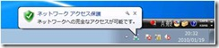
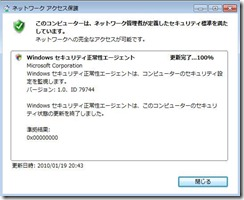
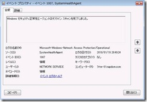

こんにちは。Windows プラットフォーム サポート担当です。
前回までの記事で、Windows 標準の NAP 機能でどのようなセキュリティの正常性のチェックを行うことができるかを説明しました。
その中でも、NAP を導入する多くのお客様が 「ちゃんとセキュリティ更新プログラムを適用していないコンピューターには、社内のネットワークには接続させたくない」と、セキュリティ更新プログラムの適用のチェックを有効にしておられると思います。
しかしながら、NAP におけるセキュリティ更新プログラムの適用状態のチェックは、必ずしもリアルタイムにおこなわれるものではありません。このため、Windows Update の画面の表示では確かに適用すべき新しいセキュリティ更新プログラムが検出されているにもかかわらず、クライアントがポリシー準拠の状態のままになってしまうタイミングが存在します。
本稿では、Windows 標準の NAP 機能において、クライアントがどのようにインストールされているセキュリティ更新プログラムの状態を取得するか、また、それがどのように結果に反映されるかの仕組みについて説明いたします。
1. 具体的に、どのような現象が発生するか？
仕組みの解説を始める前に、まずは具体的にどのような現象が発生しうるかについて説明いたします。
(1) NPS における Windows セキュリティ正常性検証ツールの設定
NPS では、下図のようにすべてのセキュリティ更新プログラムの適用を強制する設定になっているものとします。
(2) クライアントではすべてのセキュリティ更新プログラムが適用されている状態
クライアントでは、下図のようにすべてのセキュリティ更新プログラムが適用されている状態です。
もちろん、NAP のポリシーにも準拠しているものと判定されています。

(3) Windows Update により、新しいセキュリティ更新プログラムが検出される
Windows Update が行われ、新しいセキュリティ更新プログラムが適用されます。
NPS の設定では、(1) の通りすべてのセキュリティ更新プログラムの適用が要求されているので、この時点でクライアントはポリシー非準拠の状態となるはずです。
(4) ポリシー非準拠に・・・ならない！
しかし、NAP のステータスを確認することができる napstat コマンドでも、一向にクライアントの状態が変更された様子が確認できず、ポリシー非準拠の状態に推移しません。

この結果から、「もしかすると自動的に検疫の再チェックが走っていないのでは？」と思われる方もいらっしゃるかもしれません。
しかし、手動で検疫のチェックを再度行ってみても・・・(この環境では DHCP 検疫を用いているので、ipconfig /renew を実施)
やはり、ポリシーに準拠した状態のままであると判定されてしまいます。
(5) 時間経過や、OS の再起動によりポリシー非準拠の状態に推移
なぜポリシー非準拠になってくれないのだろう・・・と途方に暮れていると、しばらくの時間の経過後に自動的にポリシー非準拠の状態に推移します。また、(4) の状態で OS の再起動を行った場合も、ポリシー非準拠の状態に推移します。
それではなぜ、リアルタイムにセキュリティ更新プログラムの適用の状態が結果に反映されないのでしょうか。これは、先日の記事でもご紹介した、クライアントのセキュリティ状態を収集する WSHA と呼ばれるモジュールが、どのようにしてクライアントに適用されているセキュリティ更新プログラムの状態を取得しているかの仕組みに起因しています。
2. WSHA によるオフライン スキャン - オフライン スキャンとは
セキュリティ更新プログラムの状態は、Windows Update Agent が管理しています。
WSHA は検疫のチェックに使用する SoH を構成するために Windows Update Agent から未適用のセキュリティ更新プログラムの有無を取得する必要がありますが、新しいセキュリティ更新プログラムが検出されたことを Windows Update Agent が能動的に WSHA に対して通知するわけではなく、常に WSHA 側から Windows Update Agent に問い合わせて状態を取得します。
この問い合わせの処理をオフラインスキャンと言います。オフライン スキャンが WSHA から要求されると、Windows Update Agent は自身が持つデータベースから、セキュリティ更新プログラムの適用状態を WSHA に対して報告します。
(この処理はあくまでもオフラインで行われるので、オフラインスキャンのタイミングで再度 Windows Update が行われるわけではありません。)
オフラインスキャンが実施されると、Network Access Protection Agent に関するイベント ログに、下図のようなイベントが出力されます。

オフライン スキャンの間隔
また、オフラインスキャンは定期的に行われ、その間隔は OS のバージョンによって下記のように異なります。
(Windows XP SP3 / Windows Vista)
既定値 : 60 (分)
最小値 : 3 (分)
最大値 : 300 (分)
(Windows 7)
既定値 : 1320 (分)
最小値 : 30 (分)
最大値 : 4320 (分)
現在設定されているオフラインスキャンの間隔は、Network Access Protection Agent の起動時に出力される下図のイベントで確認できます。
また、オフラインスキャンの間隔は下記のレジストリによって変更することもできます。
1 | レジストリ キー: |
このように、オフラインスキャンが行われて初めて WSHA が未適用のセキュリティ更新プログラムの存在に気づくことができます。Windows Update の画面で新しいセキュリティ更新プログラムが検出されているにもかかわらずポリシー非準拠と判定されない場合は、まだオフラインスキャンが実施されていないことが原因として考えられます。
※ オフライン スキャンは NAP Agent サービスの起動時に必ず行われます。OS や NAP Agent サービスの再起動によって適切にポリシー非準拠の状態に推移するのはこのためです。
3. ポリシー非準拠と判定された場合の動作
セキュリティ更新プログラムの未適用によってポリシー非準拠と判定された場合、ユーザーは直ちに新しいセキュリティ更新プログラムを適用して、ポリシー準拠の状態に戻そうとすることが予想されます。
一般的に、ポリシー準拠の状態からポリシー非準拠の状態に推移するのに若干のタイムラグが存在することはそれほど大きな問題にはならないかもしれません。しかし、ポリシー非準拠の状態からポリシー準拠の状態に戻るのに時間がかかってしまうと、ユーザーからは新しいセキュリティ更新プログラムを適用したにもかかわらずに正常なネットワークに接続できないように見えてしまうので、大きな問題となりうるでしょう。
このため、ポリシー非準拠の状態に推移した場合、前述のオフラインスキャンは実施されなくなり、代わりに 15 秒に 1 度の間隔でセキュリティ更新プログラムのインストール数のみのチェックが行われるようになります。(このチェックも、WSHA から Windows Update Agent に対して行われます。)
そして、インストールされているセキュリティ更新プログラムの数に変化があった場合、再度オフラインスキャンを行い、ポリシーの準拠 / 非準拠の判定が行われます。
特記事項
本記事は 2010 年 1 月 20 日に公開された記事を本ブログに移行した記事になります。
また本情報の内容 (添付文書、リンク先などを含む) は、作成日時点でのものであり、予告なく変更される場合があります。